The Nod
You know what nobody tells you about board meetings? The chairs are always wrong. Too stiff, too formal, designed by someone who wanted you to sit up straight and pay attention. I was in one of those chairs this week at the university I serve, shifting my weight, flipping through my notes, trying to pretend I wasn't nervous. Around the table were administrators, faculty, finance people, and five Sisters of the Sacred Heart. Each of them has given a lifetime to education. Each of them loves this institution with a depth that most people in tech will never understand about anything.
And I was about to explain AI to all of them.
Here's what I knew walking in: if I lost the sisters, I lost the room. Not because they hold the most votes or control the budget. Because they hold the moral center. You can feel it when you sit with them. There's a gravity. When they understand something and believe in it, the whole table leans forward. When they don't, everyone senses that too, and no amount of slides or data will save you. I've watched million-dollar proposals die on a single raised eyebrow from a woman in a navy cardigan.
So I did something that most people in technology never think to do. I translated.
Look, AI has its own language. Neural networks, transformers, large language models, generative pre-trained architectures. If you already live in that world, the words feel as natural as breathing. If you don't, they feel like someone speaking at you in a dialect designed to make you feel stupid. And that's exactly what happens in most AI presentations. The technologist stands up, talks for thirty minutes in jargon, and then wonders why the room looks like it just endured a root canal.
But here's what hit me the night before, sitting in my room at the Drury Hotel with a glass of something I probably didn't need, being curious with Claude. I asked it to align the language of AI with that of the Sacred Heart. Claude helped me translate this for them, and I learned their language in the process. The Sisters of the Sacred Heart have their own language too. Built over centuries. Mystery, discernment, contemplation, communion, co-creation with the divine. Their vocabulary is just as rich as ours. Just as precise. Just as hard-won. It describes how knowledge moves, how understanding deepens, how wisdom goes from private insight to public service. They've been studying the architecture of meaning longer than computer science has existed.
And these two languages? They're describing many of the same things.
A neural network, thousands of nodes working in concert, no single node holding the answer, but together forming something greater than any of them alone? That's the communion of saints. I could see it so clearly my hand was shaking as I typed my notes. Deep learning, moving beyond surface patterns into layered, profound understanding? That's contemplative prayer. St. Teresa of Ávila's interior castle, with its many mansions, each one deeper than the last. A large language model, a system trained on the vast totality of human knowledge to make wisdom accessible and communicable? In the beginning was the Word.
I put the whole thing into a document. Every major AI concept, mapped to the theological framework these women have spent their entire lives studying. Not as a gimmick. Not as some clever presentation trick I could brag about at a conference. Because the parallels are real. Generative AI, the ability to create something new from existing knowledge, is co-creation with the divine. A pre-trained model, years of absorbing information before being deployed, is a novice in formation. And ChatGPT? That's the ministry in action. Where all that preparation, all that depth, all that contemplation finally meets the people who need it, in their language, on their terms. I printed it at Maryville and handed a copy to each of them before my presentation.
When I stood up to present, I looked at nobody but them.
Not the CFO. Not the provost. Not the other board members fidgeting with their water bottles. Just the sisters. Five women in a row, each of them still as stone, each of them watching me with the kind of attention that makes you understand, viscerally, why students used to straighten up when a nun walked into the room. I explained each concept in their language, and before I moved to the next one, I waited. Not for a question. Not for a comment. Just for the nod. You know the one. A small movement of the head, a slight softening around the eyes, maybe the beginning of a smile. I understand. Go on.
That was my signal. Every single time.
Deep learning? I described the interior castle. The many mansions of deepening prayer, each room more intimate than the one before it, until you reach the center where knowledge becomes something else entirely. I watched Sister's face. The moment she connected it, the recognition, the oh, I felt it in my chest. Nod. Transformers? The Transfiguration on the mountaintop, that breakthrough moment where something hidden is suddenly, blazingly revealed, and the disciples fall to their knees because they can't contain what they're seeing. Nod. A language model trained on the whole of human text to make knowledge accessible? I didn't even have to finish the sentence. She finished it for me. The Word made flesh. Nod. Smile.
I didn't rush. I didn't skip ahead. Each concept earned its own moment. Each moment was confirmed by the people in the room I trusted most to tell me whether it actually landed, not whether it sounded impressive.
And when it was over, the sisters didn't just understand AI. They saw themselves in it. Sixty years of prayer and teaching and formation and service, reflected back in a technology they'd been told was beyond them. One of them leaned forward, this tiny woman who has run schools, counseled thousands, buried friends, and outlasted every institutional crisis of the last half-century, and she said, very quietly, "We've been doing this all along." That sentence cracked the room open. The fear left. Curiosity walked in and sat down.
Here's what most people in technology get wrong about AI adoption. They think the hard part is the technology. Building the model, tuning the parameters, shipping the product. It isn't. The hard part is the moment after, when you have to explain what you built to someone who didn't build it. That's translation. And most of us are terrible at it because we've never bothered to learn the other person's language before asking them to learn ours.
AI has arrived with a vocabulary built by and for engineers. That vocabulary is precise and useful inside the field, and completely alienating outside of it. When we present AI to a boardroom, a faculty senate, a community group, a congregation, and use our native jargon, we're not communicating. We're performing. And here's the thing about performance: it can impress a room, but it can't move one. Performance builds distance. Translation builds bridges.
Empathetic listening is the opposite of performance. It means understanding your audience's framework before you open your mouth. It means knowing that a sister who has spent sixty years in religious life has an architecture for understanding knowledge, wisdom, formation, and service that is not inferior to ours. It is, in fact, deeper. She has a vocabulary for mystery, for things that can't be measured, for the way understanding changes a person from the inside. She just needs a bridge between her framework and the new one. Building that bridge is our job. Not hers. Ours.
And this isn't about dumbing things down. Let me be clear about that because it's the first objection I always hear, and it makes my teeth hurt. The sisters are brilliant. Every one of them. Decades of intellectual rigor behind their faith, the kind of rigor that involves reading Aquinas in Latin and then applying it to a disciplinary meeting with a fourteen-year-old. This is about respecting the architecture of understanding that already exists in someone's mind and connecting new knowledge to it. That's not simplification. It's good teaching. It's what the best professors do, what the best doctors do, what the best anyone does when they care enough to actually reach the person in front of them.
And if we're honest? It's exactly what the best AI systems do. Take vast, staggering complexity and make it accessible in the language the user already speaks. We built a technology that translates. Maybe we should try it ourselves.
AI is here. It has its own language. And right now, that language is keeping most of the world on the outside of a conversation that will shape everyone's future.
Translating AI into the language of the Sacred Heart wasn't a one-time parlor trick. It was a proof of concept for something much bigger. Every community has its own vocabulary, its own frameworks, its own way of understanding how the world works. Farmers have one. Nurses have one. Artists, veterans, teachers, tradespeople, each of them will be profoundly affected by AI, and none of them should have to earn a degree in computer science to participate in deciding how. A welder in south St. Louis and a nun on the board of a university have more in common than either of them has with a machine learning engineer. They both know things in their bones. They both deserve a seat at the table. And they'll both walk away from that table if the only language spoken there isn't theirs.
Inclusion is greater than exclusion. That's not a slogan. It's a strategy. The future of AI will be shaped by whoever shows up to shape it, and if the only people who show up are the ones who already speak the language, then the future will be built for a very small audience. The rest of the world will have AI done to them instead of with them. And if that happens, we will have built the most powerful communication technology in human history and used it to make people feel more excluded than ever.
Everyone in technology right now has a job that goes beyond building things. The job is translation. Finding the language that makes this real for the people in front of you. Sisters in a boardroom. Teachers in a break room. Patients in a waiting room. Your mother on the phone asking if she should be worried. Watching their faces. Paying attention to what they already know. Waiting for the nod.
And when you get it, you'll know something that no technical demo or slide deck or standing ovation can tell you: they're with you. Not because you dazzled them with jargon, but because you met them where they are, in the language they already trust, and gave them a reason to believe this future includes them.
That nod from a Sister of the Sacred Heart meant more to me than any keynote I've ever given. More than any applause line. More than any LinkedIn post that went viral. Because it meant the message didn't just land in her ears. It landed in her framework. In sixty years of understanding. In the communion of saints and the interior castle and the Word made flesh. It landed in the place where she already lives.
And if it can land there, it can land anywhere. You just have to care enough to translate.
Ready to find your translation? Let's talk or join the conversation in Discord.